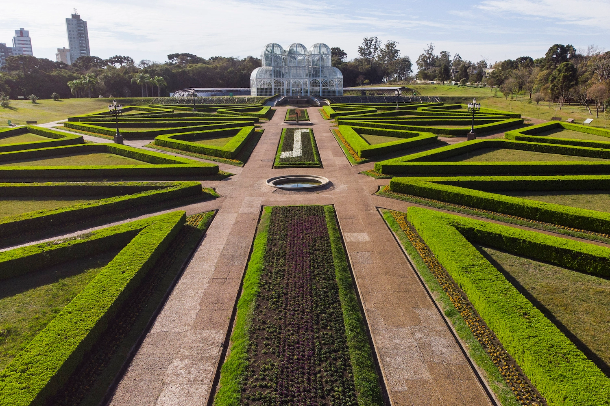
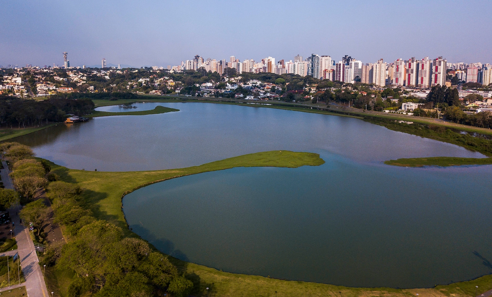
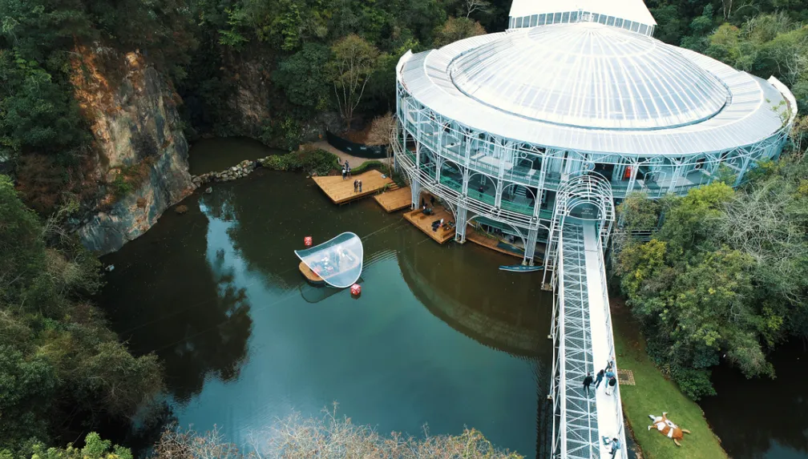

Jardim Botânico
Cartão-postal da cidade, com sua estufa de vidro no estilo art nouveau e jardins geométricos inspirados em parques franceses.
Ver detalhesGuia digital de Curitiba
Pontos turísticos, parques e áreas verdes reunidos em um só lugar, com filtros por categoria, busca rápida e uma lista de favoritos que fica salva no seu navegador.
Você ainda não favoritou nenhum lugar.
Separamos três paradas essenciais para começar seu roteiro pela cidade. A lista completa, com filtros e busca, está na página Lugares.

Cartão-postal da cidade, com sua estufa de vidro no estilo art nouveau e jardins geométricos inspirados em parques franceses.
Ver detalhes
Um dos maiores parques urbanos da cidade, com trilhas para caminhada, pista de cooper e um lago cercado de área verde.
Ver detalhes
Teatro construído em estrutura tubular metálica dentro de uma pedreira, rodeado por mata nativa e um pequeno lago.
Ver detalhesTem uma sugestão de lugar, encontrou uma informação desatualizada ou quer receber novidades sobre roteiros? Preencha o formulário abaixo.